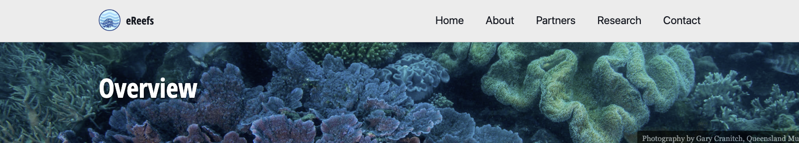

Main tools
- R
- RStudio
- Command Line Interface
git- GitHub
- VSCode
During this semester these tools will be essential for us to build reproducible and collaborative research practices.

Dr. Michael Lydeamore
Lecturer & Chief Examiner

Cynthia Huang
Tutor

Janith Wanniarachchi
Tutor
Contacting the teaching team
Most material in this course was developed by

Dr. Patricia Menendez
Patricia is a strong believer and trailblazer in reproducible research.
Start with individual projects

Will continue with a class group project

Finally, you will work on yuour own projects

Reproducibility is a way of thinking and approaching projects

Some projects require a single tool (be that R, Python, MATLAB or many others) and may only involve one person.
Others might involve different teams and require many different tools





Using tools for reproducible research and reporting


They are related but they are not the same. Why?
It’s RStudio, in the cloud.
Why?
Definition: Version Control
A system that records changes to a file or a set of files over time, so that you can recall specific versions later.

gitDefinition: git
Git is a distributed version-control system for tracking changes in source code during software development. It is designed for coordinating work among programmers, but it can be used to track changes in any set of files. Its goals include speed, data integrity, and support for distributed, non-linear workflows


git repositoriesgit and GitHub

Summary
Resources
git manual